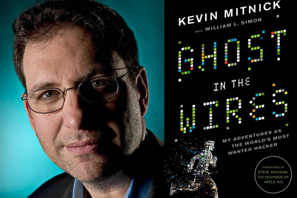

Kevin Mitnick
The world's most famous hacker

"My primary goal of hacking was the intellectual curiosity, the seduction of adventure."
- 1978 - Kevin Mitnick meets phone phreak Roscoe of Roscoe gang while harassing a HAM radio operator on the air in Southern California.
- 1980 - Eddie Rivera writes cover story on Roscoe Gang for LA Weekly magazine.
- 1980 - December - Roscoe Gang, including Kevin Mitnick, invade computer system at US Leasing.
- 1981 - Roscoe, Kevin Mitnick and an accomplice bluff way into PacBell's downtown office after hours and burgle documents and manuals. Susan Thunder, paramour of Roscoe and member of Roscoe Gang, squeals on Mitnick and PacBell burglary to Los Angeles district attorney's office investigator. Mitnick's home in San Fernando Valley searched; Mitnick, Roscoe and accomplice subsequently arrested.
- 1982 - Roscoe pleas guilty to conspiracy and fraud. Sentence: 150 days in jail. Accomplice gets thirty. Mitnick gets ninety day diagnostic study by juvenile justice system, plus a year probation. Kevin Mitnick and Lenny DiCicco enter USC campus and begin using student computers for hacking. Eventually, campus police arrest Mitnick and DiCicco, handcuff them to office benches. USC drops any charges but Los Angeles Police Department computer crime unit pursues Mitnick case. Mitnick sent to juvenile prison in Stockton, California, for breaking probation. Sentence: 6 months.
- 1984 - Mitnick working for Great American Merchandising, a company operated by acquaintance of family. Begins running unauthorized TRW credit checks and calling PacBell from Great American. Company manager reports Mitnick to district attorney's office again. Mitnick's home again searched. Mitnick goes into hiding.
- 1985 - Mitnick resurfaces in Los Angeles, contacts DiCicco who is now working for Hughes in El Segundo. Mitnick comes to Hughes and logs onto Dockmaster, National Security Agency's public system. DiCicco subsequently fired from Hughes. Mitnick enrolls at Computer Learning Center, Los Angeles. Meets future wife.
- 1987 - Mitnick invades system at Santa Cruz Operation. Santa Cruz police travel to Los Angeles to search apartment where call coming into SCO originates. It belongs to Mitnick's girlfriend. Mitnick and girlfriend subsequently arrested and charged with unauthorized access to a computer. Charges against girlfriend dropped. Mitnick's representation bargains felony charge down to misdemeanor. Sentence: three years probation. During period, Mitnick marries girlfriend.
- 1988 - Pierce College authorities contact LAPD about Kevin Mitnick and Lenny DiCicco misusing campus systems. Mitnick and DiCicco now enrolled in computer class at Pierce. Mitnick and DiCicco again become targets of LAPD investigation. Mitnick attempts to pull down job at Security Pacific. LAPD detective tips company. Mitnick ejected from premises. Pierce College begins disciplinary action against Mitnick and DiCicco. Both expelled. They appeal unsuccessfully. Jet Propulsion Laboratory computer break-in Pasadena, CA, profiled in Los Angeles Times. Attributed to Mitnick and DiCicco in John Markoff's "Cyberpunk". Mitnick using DiCicco's workplace as jumping off point for hacking. DiCicco begins talking to FBI. With DiCicco cooperating, FBI arrests Mitnick for invading Digital Equipment Corporation systems and allegedly stealing software. DiCicco also indicted. Government proceeds to attempt to convict Mitnick on four felony counts. Defense eventually gets prosecution to accept idea that Mitnick addicted or psychologically compelled to actions. Mitnick convicted and given one year sentence at Lompoc, California. DiCicco pleads guilty to one felony. Sentence: 5 years probation, community service. Mitnick and wife separate.
- 1992 - Mitnick working at private investigating firm in Calabasas while on probation. FBI arrives to arrest Mitnick for alleged break-ins at PacBell. Mitnick again goes into hiding.
- 1994 - California Department of Motor Vehicles issues $1-million warrant for Mitnick's arrest on charges of fraudulently trying to acquire driver identification. Mitnick traced to Seattle, Washington, where he allegedly worked as a computer "trouble-shooter." Mitnick once again on move. Christmas - Mitnick accused of invading security expert Tsutomu Shimomura's system in San Diego.
- 1995 - Mitnick hacks The WELL in Sausalito, California. Few mention WELL security is routinely broken. The WELL, security-wise, is known as a "hot" system. Mitnick and Shimomura become media sensations after hacker's arrest in Raleigh, North Carolina. Tracked by Shimomura, news hounds overhype events into Dark Hacker v. rock'n'rollin,' groovy lookin' computer security guru White Knight story. Mitnick continually portrayed as obese, foul-looking dump. Reality shows Mitnick well-groomed, rather fit. Mitnick alleged to have broken into Netcom, stealing credit card base in process. Netcom's credit card base said to be commonplace on 'Net. Miramax announces aim of producing movie based on life and times of Kevin Mitnick.
If you want to know more Click this link to Kevin Mitnicks wikipedia page